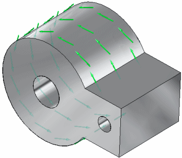
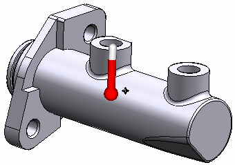
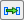
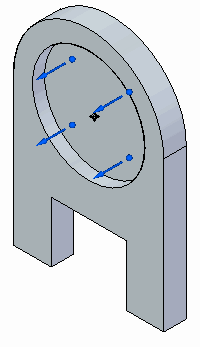
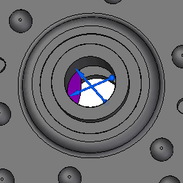
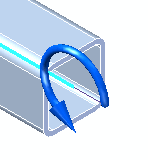

Structural and body loads
The following load types can be used in structural studies:
Structural Loads
-
Note:
Moment is only available for the Beam mesh type.
Body Loads
The structural load commands are available in the Structural Loads group on the ribbon, and on the shortcut menu from the Simulation study navigation pane. Load commands that apply to the entire body are available in the Body Loads group on the ribbon. Before you place a load, you can set options for it using the Loads command bar.
 Force loads
Force loads
A force load applies forces and moments uniformly across the geometry. Only one force load can be applied to each element.
Use the Force command in the Structural Loads group and then provide the following information:
-
Geometry—You can select one or more faces, edges, or vertices. For tetrahedral and surface mesh types, you also can select face sets and features. For beam mesh types, you can only select beam element nodes and beam curves.
-
Force direction—Orient the steering wheel primary axis to specify the direction in which the force load is to be applied. Alternatively, you can select the Components option on the Loads command bar and then type the X, Y, Z, direction components.
-
Value—Use the dynamic input box to specify a force value. Default units are force magnitude, for example, 1 newton.
-
Load distribution—When the entities selected are of the same type, you can use the Total Load option on the command bar to specify if the value is proportionally distributed or if it is applied in full to each entity.

Pressure loads
Use the Pressure command in the Structural Loads group to apply uniform pressure to faces. A pressure load is similar to a force load, except the value of the load is measured across smaller areas, and the direction is perpendicular to the face. For this reason, you can apply both a pressure load and a force load to the same face.
Pressure loads require the following information:
-
Geometry—Select a face. Only one pressure load can be applied to each face.
-
Load direction—Determined automatically.
-
Value—Use the dynamic input box to specify a pressure value. Default units are Force/Unit Area.

 Hydrostatic Pressure loads
Hydrostatic Pressure loads
Use the Hydrostatic Pressure command in the Structural Loads group to define a nonuniform fluid pressure load. Hydrostatic pressure is the distributed force that a liquid at equilibrium exerts against the surfaces it is in contact with in a confined space. It is calculated from a point that defines the maximum height of the fluid. The hydrostatic properties are nonuniform (variable) due to changes in the density of the fluid and the gravity within the container.
A fluid in a container exerts pressure on the walls of the container. The pressure of the fluid on the bottom of the container is greater than the pressure at the top due to the effect of gravity.
The formula to calculate the fluid pressure=ρgh,
Where:
ρ=Fluid density
g=Acceleration of gravity
h=Height of fluid from bottom surface


In Solid Edge Simulation, hydrostatic pressure loads require the following information:
-
Face Selection—Select the faces in the container to apply hydrostatic pressure.
-
 Fluid height—The top level of the fluid in the container, defined by a free space
keypoint and offset, or by
Fluid height—The top level of the fluid in the container, defined by a free space
keypoint and offset, or by  XYZ Point location coordinates.
XYZ Point location coordinates. -
Load direction—The load symbols indicate the default direction of hydrostatic pressure. Click the Flip Direction button
 to reverse the direction.
to reverse the direction. -
 Gravity within the container—How gravity is applied (perpendicular or at an angle)
and the gravity acceleration value.
Gravity within the container—How gravity is applied (perpendicular or at an angle)
and the gravity acceleration value. Use the dynamic input box to specify a gravity acceleration value, as a single magnitude or as component values. The default units are Length/Time², for example, 981.000 cm/sec².
-
Gravity direction—The load symbols indicate the default direction of gravity. Click the Flip Gravity Direction button to reverse the direction.
Note:There can be just one gravity acceleration value applied to the study geometry. If you previously defined gravity using the Simulation tab—Body Loads group→Gravity command, then that acceleration value is applied automatically to the hydrostatic pressure load. To change the acceleration value, edit the gravity load definition.
-
Fluid Density—Use the Density box on the command bar to enter the density of the fluid in the container. The displayed value is the density of water.
 Torque loads
Torque loads
Use the Torque command in the Structural Loads group to apply a turning force to one or more faces about an axis of rotation.
Torque loads require the axis about which the torque load is applied, the direction of rotation, and the torque value.
-
Geometry—Select one or more faces or surfaces.
-
Rotation axis—Orient the steering wheel primary axis to specify the axis of rotation.
-
Load direction—Select a steering wheel cardinal knob to specify the rotation direction.
-
Value—Use the dynamic input box to specify a torque value. Default units are Force/Length.
-
Load distribution—Use the Total Load option on the command bar to specify if the value is distributed proportionally across all faces or is applied in full to each face.

 Gravity loads
Gravity loads
You can use the Gravity command in the Body Loads group to apply a gravity load to the entire model selected for the study.
A gravity load is a general translational acceleration load. Solid Edge Simulation calculates the gravity load by multiplying the specified acceleration of gravity by the model mass.
Gravity loads require the following information:
-
Material density—You can set this in the Material Table. The mass is calculated from the density of the material selected for the model.
-
Geometry—Automatically applied to the entire model.
-
Load direction—Specify gravity direction using either of these methods:
-
You can define translation in the X, Y, and Z directions of a coordinate system using the loads directional steering wheel, or by selecting the Components option on the Loads command bar and then typing the X, Y, Z, direction components.
-
You can define linear acceleration by selecting a straight edge.
-
-
Value—Use the dynamic input box to specify an acceleration value. The default units are Length/Time², for example, 9.81 m/sec².
For an example of how you can use a gravity load, see Tutorial: Perform a thermal stress analysis.
Centrifugal loads
A centrifugal load is generated when a body rotates about an axis. Use the Centrifugal command in the Body Loads group to apply a centrifugal load to a part or an assembly. The load is applied to the entire model.
The centrifugal load is represented by two direction-of-rotation symbols on the model. These represent angular velocity and angular acceleration. You can set these independently to clockwise or counterclockwise, and off.

Centrifugal loads require an axis of rotation, the angular acceleration, and the velocity. Solid Edge Simulation uses these values and the material mass density to calculate the centrifugal load.
-
Material density—You can set this in the Material Table. The mass is calculated from the density of the material selected for the model.
-
Geometry—Automatically applied to the entire model.
-
Rotation axis—Orient the steering wheel primary axis to specify the axis of rotation.
-
Values—Centrifugal loads require two separate values. Either value can be zero, but both cannot be zero at the same time. A zero value turns the load symbol off.
-
(Angular velocity) Angular Rotation/Time, for example, rad/sec.
You can flip the direction by pressing the F key.
-
(Angular acceleration) Angular Rotation/Time², for example, rad/sec².
You can flip the direction by pressing the Shift+F keys.
-
Body Temperature loads
Temperature loads applied to the model can be used in structural studies, in thermal studies, and in coupled studies.
In structural studies, you can use the Body Loads group→Body Temperature command to assign a temperature load to study the effect of thermal change on the model as a whole. You can apply one body temperature load per model.
To define a body temperature load, you provide the following information:
-
Geometry—Automatically applied to the entire model.
-
Value—Use the dynamic input box to specify a temperature. The default units are degrees Fahrenheit or Celsius. Zero values are allowed.
-
A body temperature load is required in thermal studies involving radiation loads.
-
A body temperature load is required in transient heat transfer studies to define the initial temperature of the study. In a transient heat transfer study of a part model with a tetrahedral mesh, this load is created automatically when you initiate the study.
-
For other thermal studies and for coupled studies, you optionally can use a body temperature load to provide an initial temperature estimate to speed calculations in NX Nastran.

In thermal studies, you can use the Thermal Loads group→Temperature command:
-
To study the gradient thermal conditions on one or more entities at thermal equilibrium. Use this load when you are not interested in evaluating the time it takes to reach thermal equilibrium.
-
To apply a temperature load to selected geometry entities instead of to the entire model.
To learn about this temperature load command, see Thermal loads.

Displacement loadsYou can apply a known displacement value to one or more faces, features, edges, or vertices using the Displacement command in the Structural Loads group. This is sometimes referred to as enforced displacement.
Displacement loads require the following information:
-
Geometry—You can select one or more faces, edges, or vertices. For tetrahedral and surface mesh types, you also can select face sets and features.
-
Load direction—Orient the steering wheel primary axis to specify the direction in which the load is to be applied. Alternatively, you can select the Components option on the Loads command bar and then type the X, Y, Z, direction components.
-
Value—Use the dynamic input box to specify a displacement value. Default units are distance, for example, mm.

NX Nastran requires that a displacement load has a matching constraint on the part. In Solid Edge Simulation, the Displacement command automatically generates the required constraint if you also select the Pinned option on the command bar.
Bearing loads
You can use the Bearing command in the Structural Loads group to model loading conditions on cylindrical and non-cylindrical parts, surfaces, and structural applications, such as roller bearings, gears, cams, and rolling wheels.

Bearing loads require the following information:
-
Geometry—Select one or more faces on solid parts or surfaces on sheet metal parts. They do not have to be cylindrical elements.
-
Load direction—Orient the steering wheel primary axis to specify the direction in which the bearing load is to be applied. The load direction must point towards a face.
-
Value—Use the dynamic input box to specify the bearing force value. Default units are Force Magnitude, for example, 1 newton.
-
Load distribution—Use the Total Load option on the command bar to specify whether the value is distributed proportionally across all faces or is applied in full to each face.
-
Load angle—The load angle (combined with the load value and the surface normal) determines the area in which the bearing is in contact with a given surface. Bearing load symbols are shown only on the area of contact. Use the dynamic input box to enter a value from 1E-015 to 180 degrees.
You can use these options on the Loads command bar to change how the bearing load is applied.
-
The default action for a bearing load is to push on the face, but you can set the Traction option
 to pull it.
to pull it. (A) Traction=on (pull)
(B) Traction=off (push)


-
If you want the resulting bearing load to be normal to the surface, like a pressure load, yet still distributed based on the angle, then you can use the Normal to Surface option
 .
.(A) Normal to Surface=on
(B) Normal to Surface=off


 Moment loads
Moment loads
You can use the Moment command in the Structural Loads group to apply a force to bend a beam.
Moment is only available for the Beam mesh type.
Moment loads require the following information:
-
Geometry—Select one or more beam element nodes or beam curves.
-
Moment direction—The default axis of rotation is about the beam axis. However, you can Orient the steering wheel primary axis to specify the direction in which the moment is to be applied.
-
Value—Use the dynamic input box to specify a force value. Default units are force distance, for example, 1 newton meter.
-
Load distribution—Use the Total Load option on the command bar to specify if the moment value is proportionally distributed or applied in full to each selected beam curve. For a beam curve, the moment is distributed across its length.

To learn how to create a study for a structural frames model, and to apply forces along beams at nodes and curves, see Tutorial: Simulate stresses on a bridge.
How do I
Define a loadActivity: Apply a bearing load
Activity: Apply a centrifugal load
Activity: Apply a torque load
Activity: Apply a body temperature load
Learn more
Creating and using loadsLoad labels and symbols
Thermal loads
External loads (imported loads)
Loads directional steering wheel
Look up more details
Loads command barThermal Load Options dialog box
Radiation Load Options dialog box
Color dialog box
Graphic Symbol Size dialog box